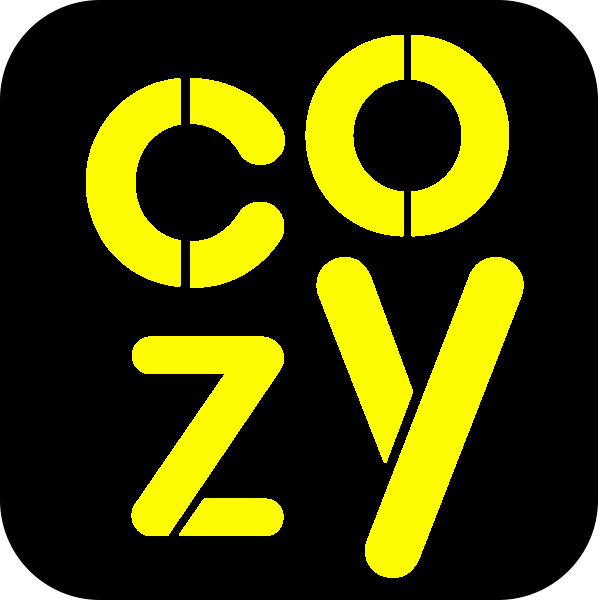

First thoughts on the site
From the very beginning, development was very slow and very bad. But gradually the idea of this project began to emerge and develop faster and faster. The Cozy Corner went through a lot of issues and updates, and soon the test version was removed, but the old logo remained.

Progressive Support
Having removed a terrible sketch, I wanted to recreate the dream into reality. And in this new sketch, progress was visible. The same friend made the logo and no longer helped on the project. But one of my acquaintances was interested in this sketch and helped with templates and ideas.

End of story?
Several weeks passed, and the site was abandoned and no one needed it. But the desire to restore the site grew and grew. First, the brand name was changed to Cozy Corner. Then a new support was inserted. And even at this moment, the Cozy Corner is being updated. But this is not the end!